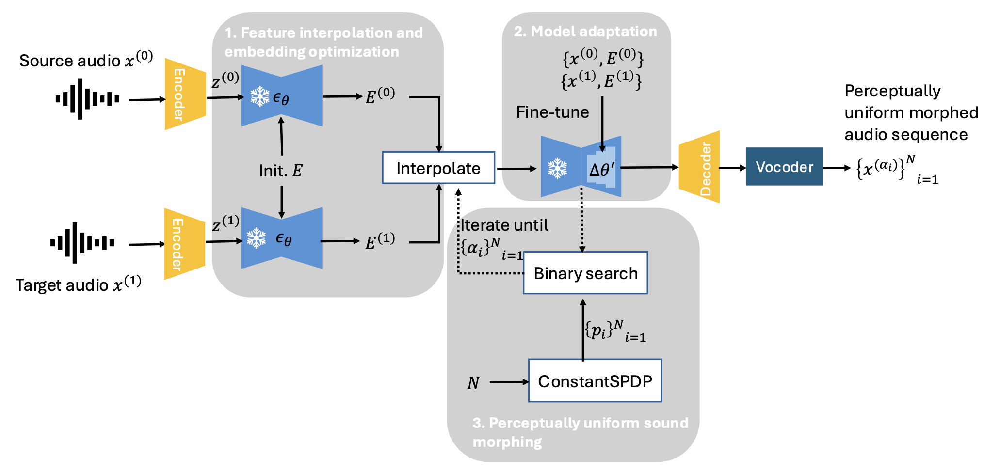

This page demonstrates SoundMorpher, featuring a selection of morphed results from our experiments, including timbral morphing of musical instruments, dynamic music morphing and environmental sound morphing. We hope you could enjoy our demonstartion and find some interesting sounds!

If you are interested in our paper, please cite as below:
Niu, Xinlei, Jing Zhang, and Charles Patrick Martin. "SoundMorpher: Perceptually-Uniform Sound Morphing with Diffusion Model." arXiv preprint arXiv:2410.02144 (2024).